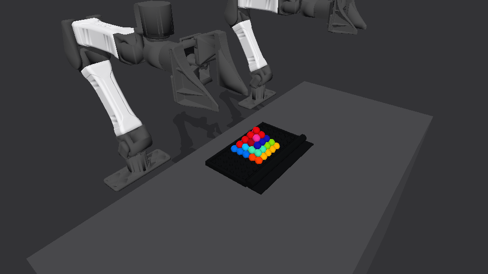
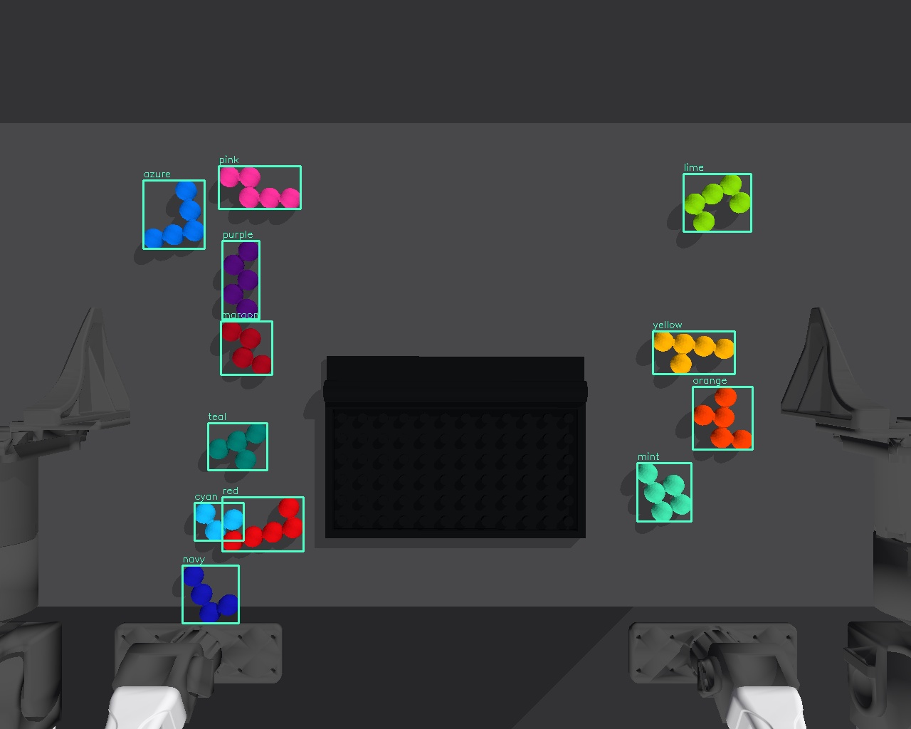
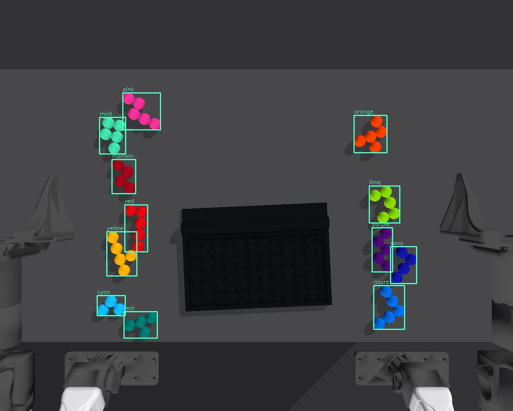
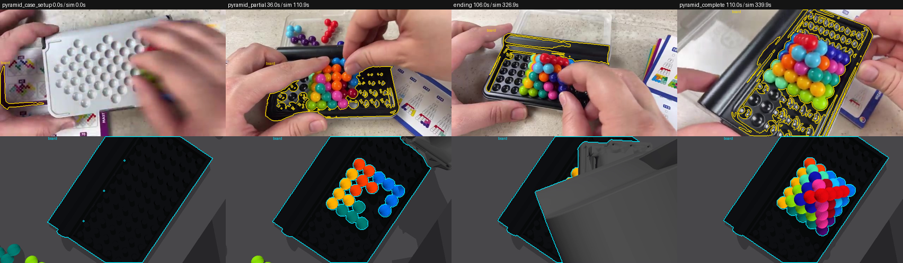
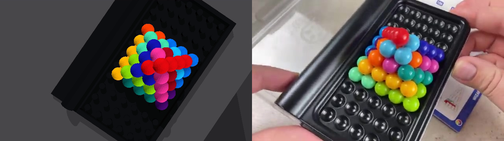

RoboSimStudio
The dynamic case, twelve rigid pieces, two YAM arms, motor-driven joints, contact physics, and a live browser workcell.
Explore RSSORACLE-STATE BASELINE / RSS × GaP
Two YAM arms assemble a flat puzzle and a pyramid using simulator-provided object poses. These experiments demonstrate physical control. A separate RGB-only prototype is now available below; complete visual assembly remains unvalidated.
Privileged object poses · Stock grippers · Full source & evidence

NEW / RGB-ONLY PROTOTYPE
A separate GaP controller detects colours and fits known bead shapes across four calibrated RGB cameras. It receives no true object poses, depth, instance IDs or evaluator results. Robot encoders and known geometry support motion planning.


| Diagnostic | Observed result | Scope |
|---|---|---|
| Randomized RGB perception | 36 / 36 pieces · max. 1.06 mm | 3 non-overlapping simulated scenes; no manipulation |
| Cyan grasp → place → release | 2 / 2 corrected runs · 0.99 / 0.50 mm | One piece operated; all 12 initially loose; robot-only IK inputs |
| Complete visual assembly | Not established | No full-task success claimed |
RGB-only single-piece diagnostic, seed 101, re-run after removing scene-wide IK inputs. This external replay renders the recorded physical trajectory; it is not a camera input to the controller. The visual workflow and an independent released-pose audit pass. Earlier development attempts and audit findings remain in the experiment ledger.
Known colours and CAD, four fixed calibrated cameras, and a calibrated table. Board localization currently assumes level support and a limited yaw range. The prototype rejects insufficient visual evidence. Full assembly, reliable control across scattered starts, overlapping piles, and flat-to-pyramid disassembly are still open.
Read the observation audit ↗Read all visual attempts and limitations ↗Download raw RGB evidence ↗01 / WATCH THE WORK
The recordings show the oracle-state RSS controller running from an empty case. Select an assembly to explore its video and measured outcome.
Live recordings report RSS and GaP success. The separate formal episodes also pass an independent full-pose trajectory audit. Video playback duration differs from simulation time because the recorder samples simulation steps.
02 / INSIDE THE SYSTEM
The controller reads each piece's true simulator pose, then grasps, carries, releases, and checks it. A failed placement follows an explicit retry or abort route.
The dynamic case, twelve rigid pieces, two YAM arms, motor-driven joints, contact physics, and a live browser workcell.
Explore RSSExecutable skill subgraphs with frozen scripts, measured checkpoints, explicit recovery routes, and a required success exit.
Open the policyBeads reconstructed from recorded rigid poses, Hungarian matching, finite-difference velocities, and released stability.
Read the auditorINTERACTIVE POLICY EXPLORER
Controller schematic. The source workflow stores each placement as a script subgraph with placed, retry, and error exits.
Observation boundary: the full-assembly baseline reads hidden simulator object poses. It is an oracle-state baseline and does not meet a vision-only observation contract. Motions run through simulated motors and contacts; the policy does not teleport, weld, or pin pieces. Cartesian IK screening does not guarantee collision-free motion.
03 / MEASURED, NOT ASSUMED
Formal oracle-state baseline episodes require all three physical checks: the native RSS goal, a completed GaP workflow, and an independent released-trajectory audit.
| Task / graph | Full successes | Simulation time | Max. bead error | Released stability |
|---|---|---|---|---|
| Flat / v10 | 2 / 2 | 267.26 / 267.06 s | 0.71 / 0.61 mm | 4.6 s, both runs |
| Pyramid / v40 | 2 / 2 | 363.28 / 344.54 s | 2.61 / 2.79 mm | 4.6 s, both runs |
✓ All 14 distinct checkpoints pass on their last invocation. The pyramid repeats retain 16 and 15 records, including 2 and 1 recovered failures.
✓ The independent audit rejects three controls: a piece shifted 8 mm, closed grippers, and the case plus pieces floating 50 mm.
These are nominal oracle-state repeats. They do not establish vision-only execution, randomized robustness, or real-robot performance. In the separate controlled flat benchmark, the selected faster policy passed 2/2 training seeds and 0/2 held-out seeds. An additional candidate passed 1/2 held-out seeds.
Read the full evidence reportDevelopment diagnostics remain separate from full assemblies.
Changing support arms disturbed seated parts. Later, a cyan placement looked good locally but moved a yellow support by about 33 mm.
→ Check already seated supports.A 35 mm release trapped the apex in the jaws. Retreat lifted it out again. Opening to 90 mm allowed physical release with the stock gripper.
→ Verify after release and retreat.An outward grasp using the piece's rigid symmetry and a continuous Cartesian carry preserved the support structure and completed both repeats.
→ Recover, remeasure, then proceed.04 / REFERENCE → RECONSTRUCTION
Inspired by a human demonstration. The robot uses a different color packing for the pyramid, an accessible loose-piece layout, and a case resting on the table.

Source above · RSS below · Anchors aligned proportionally, not by identical action timing.
Original demonstration
The actual recorded final frame has a board-mask IoU of 0.377. This measures only the board mask. It is neither an all-piece assembly score nor a measure of photorealism. The native “1 of 1” motion verdict also concerns the board alone.
The white reverse carrier shown early in the source is not modeled. The person lifts and tilts the case; the simulation leaves it on the table. Gloss, sockets, latches, labels, lighting, and the background remain approximations.
Open the full look sheet05 / MAKE IT RUN
Oracle-state task code, all frozen GaP graphs, RSS, the skill registry, evaluation tools, videos, and the complete experimental record.
git clone --recurse-submodules https://github.com/Imbernoulli/gap-puzzler.git
cd gap-puzzler
./tools/bootstrap.sh
# Open the actual RSS workcell
./live/ctl up --scene live/scene.py --port 8081
./live/ctl play assemble --record my_take --every 70 --camera phoneThis is a static project and evidence viewer. The interactive RSS physics workcell runs locally with the included Python stack. GitHub Pages serves the recordings, policy explorer, and results; it does not run the physics engine.